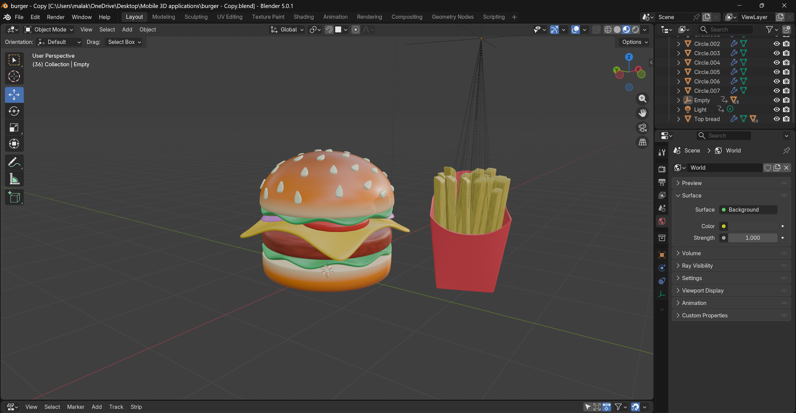
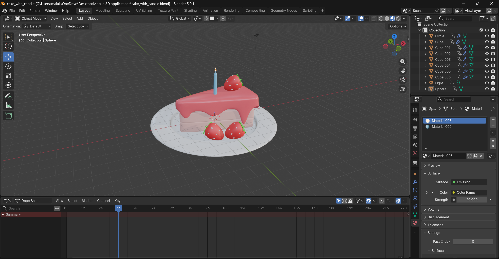

Inside the 3D Taste Experience
This mini restaurant turns a simple menu into a hands-on digital visit. Each dish has its own 3D scene, so you can look around the object and use on-screen controls to change what you see.
Start exploring: Choose Drinks, Dessert, or Food from the Menu at the top of the page. On each item page, drag to rotate the view and try the buttons beside the model.
About
This project is an interactive 3D mini restaurant website. It allows users to explore different food items such as a Coca-Cola drink, a cake dessert, and a burger meal in 3D.
The aim of the project is to combine web design with 3D modelling and interactive features to create an engaging user experience.
3D models
For this website, I created and integrated three 3D models: a Coca-Cola can, a cake, and a burger.
The models were designed using Blender and exported for use on the web.
The Coca-Cola model includes multiple states such as normal, opened, and recycled versions.
The cake model includes interactive elements such as adding strawberries and candles.
The burger model allows customization by adding fries and rotating the model.
All models are rendered in the browser using Three.js.



Design
The website was designed as a mini restaurant interface with a clean and consistent layout.
I used HTML, CSS, and Bootstrap to structure the pages and create a responsive design.
The homepage presents three main categories (Drink, Dessert, Food), each linking to an interactive 3D page.
The layout adapts to different screen sizes, ensuring usability on both desktop and mobile devices.
Integration
The project integrates multiple types of media:
3D models using Three.js
Images on the homepage and About page
Logo which is designed using Canva
Audio to enhance interaction (e.g. opening the can, crush the can , playing happy birthday song when adding candle to the cake)
Text descriptions to guide users
Animations such as opening the can ,crush it, add strawberries and candle, add fries and rotating models
These elements are combined to create a complete interactive web experience.
Interaction
The website includes several interactive features:
Users can rotate and explore 3D models using orbit controls
Buttons allow actions such as:
Opening the can and crush it
Switching between models
Toggling wireframe view
Rotate model
Adding strawberries and candles to the cake
Customizing the burger by adding fries
(Note: you should switch model when you moving from function to other such as from open to crush)
These interactions allow users to manipulate and explore 3D objects directly in the browser.
Implementation
Technology Used
The project was developed using:
HTML, CSS, and JavaScript
Bootstrap for layout
Blender for 3D modelling
Three.js for rendering and interaction
Canva for designing the logo
Rationale of Technology
Blender was used because it allows creation and animation of detailed 3D models.
Three.js was chosen because it enables real-time rendering and interaction of 3D objects in web browsers.
Bootstrap was used to quickly create a responsive and structured layout.
Testing Strategy
I tested the website by checking all navigation links between pages, testing all buttons and interactions, verifying that 3D models load correctly and animations work, and checking the layout at different screen sizes (576px, 768px, and 992px).
Deeper understanding
I learned how to export 3D models from Blender and integrate them into a web application using Three.js.
I understood how lighting and camera positioning affect the appearance of 3D models.
I learned how responsive design must include both layout and 3D canvas adjustments.
I gained experience in creating interactive web experiences using JavaScript and 3D libraries.
What to explore
Each page offers a different kind of interaction. Open the cola can and try its alternate or recycling states; add fruit or a candle to the cake; or add fries beside the burger. The wireframe control reveals the model's underlying 3D structure, while rotation lets you inspect the scene from another angle.
Implementation & publication
This About page includes all required evidence of the project development.
The website was successfully tested and runs correctly in the browser.
All pages load properly, and the 3D models and interactions function as expected.
I have zipped my website and I have tested that my folder can be opened in Visual Studio Code when unzipped and works as it should.